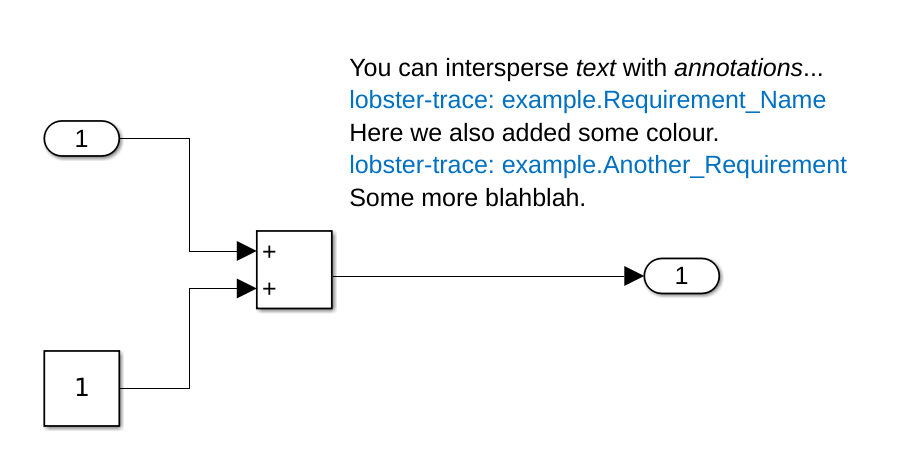
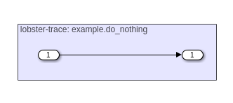
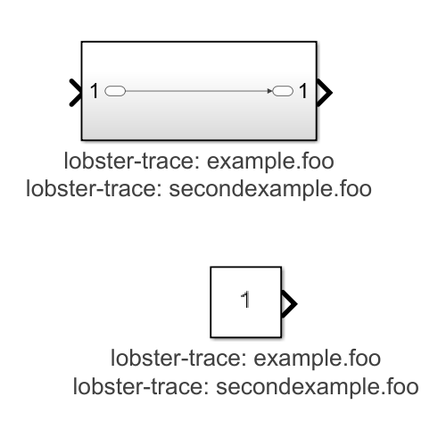

MISS_HIT includes a simple tool
(mh_trace), that can be used to
extract tracing tags for code and tests. The output is in the
LOBSTER format.
User manual
Introduction
Tracing your code and tests to your requirements and
specification is a common activity when developing to safety
standards (such as ISO 26262 or DO-178C). While you definitely
should not be using MATLAB for this, it is not my place to
judge; and so we have a tool to support this
activity. mh_trace can extract tags put in code,
tests, and Simulink models and generate
a LOBSTER
trace files that a different tool (such as LOBSTER) can
use to generate a traceability report.
The MATLAB language already includes some features
(TestTags)
to help you annotate tests; consider this example (taken from
the MathWorks website):
classdef (TestTags = {'FeatureB'}) ...
ExampleTagClassTest < matlab.unittest.TestCase
methods (Test)
function testF (testCase)
% test code
end
end
methods (Test, TestTags = {'FeatureC','System'})
function testG (testCase)
% test code
end
end
methods (Test, TestTags = {'System','FeatureA'})
function testH (testCase)
% test code
end
end
end
Running mh_trace will generate two lobster files (by
default mh_imp_trace.lobster for code and models,
and mh_act_trace.lobster for tests) that shows which
tags affect any given function. Here shown is a snippet for
the testG function:
While TestTags can be used to annotate tests, it cannot be
used to annotate code. To trace code, MISS_HIT supports a
special pragma:
%| pragma Tag("potato-req-1");
You can also give more than one tag in a single Tag pragma:
%| pragma Tag("potato-req-1", "kitten-req-42");
Pragma tag applies to all items scoped logically under the
entity that is tagged. For example placing the Tag pragma in a
class definition will affect all methods; placing it in a
function will also affect all nested functions; and placing it
in a compilation unit will affect all functions or methods in
that compilation unit.
Note: this pragma can also be used to tag tests. There is no
difference between using this pragma and adding a TestTags
property to tests.
Annotating models
With text annotations
Simply place an annotation anywhere in your block. If the text
contains a line that starts with lobster-trace: then
it is interpreted as a tracing tag.

Example showing usage of annotations for tracing
You may place as many of these annotations as you wish, and
any formatting (a feature of more recent Simulink releases) is
ignored.
With area annotations
You may also use area annotations. Note however that the
grouping is irrelevant, the traceable item that these tags
relate to are the enclosing system or sub-system; similar to a
text annotation.

Example showing usage of area annotations for tracing
The point of these is to make it easier for the human to see
what is going on in larger systems. If you want a more
fine-grained tracing you still need to chop up your larger
system into several smaller sub-systems; similar to a large
spaghetti MATLAB function.
With block properties
Another option is to
use block
properties, using lobster-trace: foo.bar just like
above.

Example showing usage of block properties for tracing
If the block is sub-system, then the tracing tags apply
to the sub-system (i.e. you would get the same behaviour if
you enter the sub-system and place the annotation there). If
the block is not a sub-system (e.g. a in-port or an adder,
etc.) then the annotation will apply to the system or
sub-system containing the block (i.e. you would get the same
behaviour if you just put a annotation somewhere in the system
containing the block).
Excluding code
Most projects have some code for e.g. setting up the workspace
or build scripts. This code is not part of the delivery and so
should not make it into the requirements traceability report;
it can be excluded using the No_Tracing pragma:
%| pragma No_Tracing;
This pragma has identical scoping rules as pragma Tag, and
completely removes the affected functions from the json
output. If you place it at the top of a file, it excludes all
functions in that compilation unit. If a function is affected
by both Tags and a No_Tracing pragma then the No_Tracing
pragma takes precedence.
Command-line interface
--out-imp FILE
By default we produce a file
called mh_imp_trace.lobster for code and models. With
this option you can change the filename.
--out-act FILE
By default we produce a file
called mh_act_trace.lobster for tests. With this
option you can change the filename.
--only-tagged-blocks
By default we produce list all blocks in a Simulink model or
library, with this option we only include the ones that have
at least one tag.
--untagged-blocks-inherit-tags
If this option is set, then a Simulink sub-system that does
not have its own tags will inherit the tags from its enclosing
system. Once new tags are encountered, they will be used. Note
that this option does not affect embedded MATLAB blocks.
Limitations
The tool will only extract tags from the files that MISS_HIT
normally processes. So if you have your unit tests excluded
from MISS_HIT then you will get no tracing. You could use the
common --ignore-config option to work around this; or
even better: don not exclude your unit tests.